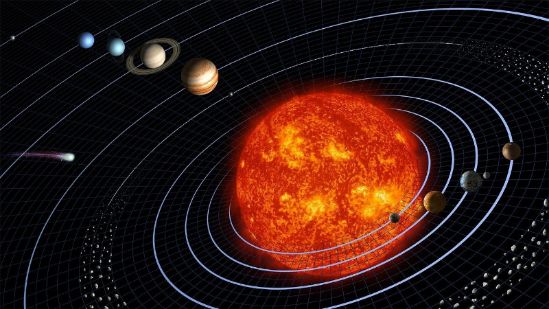
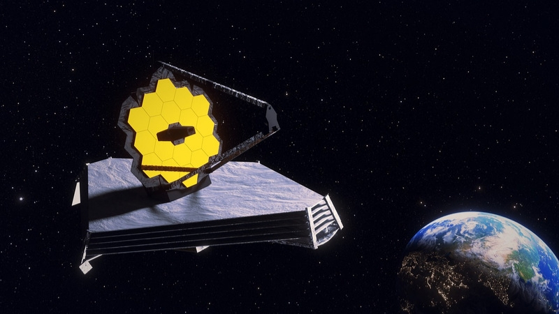

-

Quais são os Planetas do Sistema Solar
26 abril 2022
-

Como funciona a Teoria da Relatividade Geral e a Restrita
11 abril 2022
-

JAMES WEBB: O telescópio mais poderoso
02 abril 2022
-

O que sabemos sobre os Buracos Negros
01 abril 2022
-

STEPHENSON 2-18: Conheça a maior estrela do universo atualmente
01 abril 2022